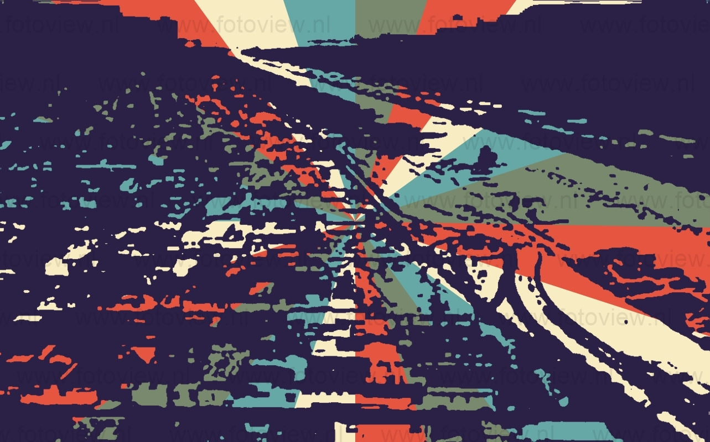
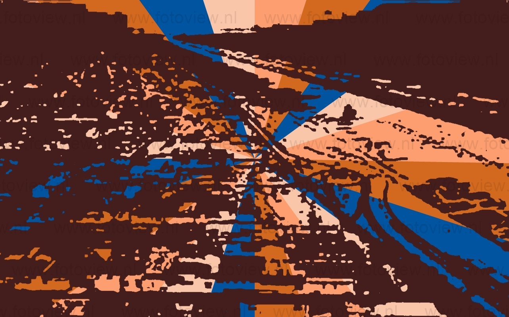
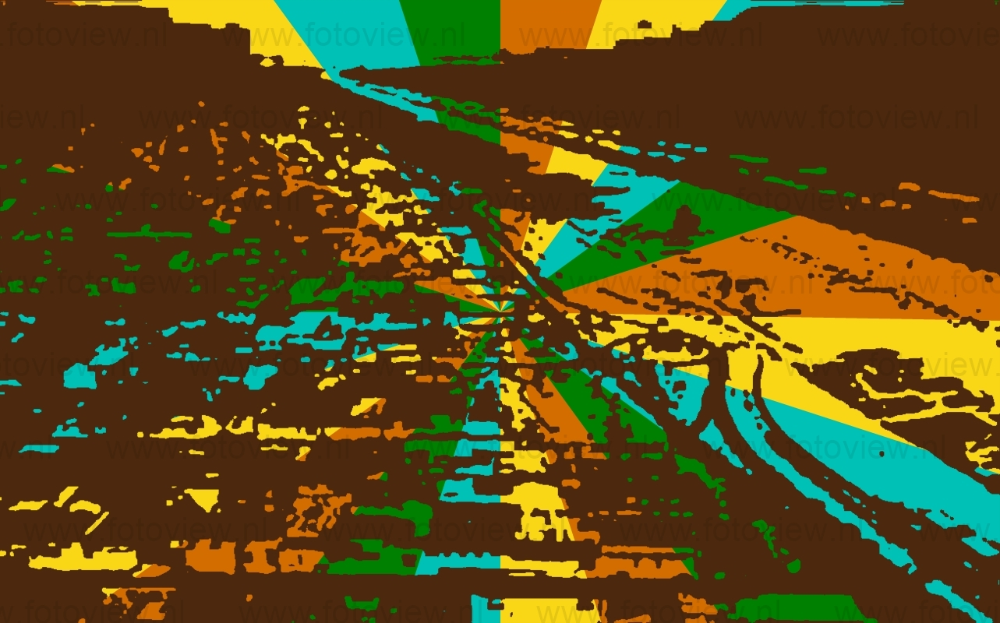

No Brasil, a riqueza das regiões costeiras e o desafio de dominar o sertão povoado por índios, repleto de madeiras nobres, ouro e pedras preciosas que poderiam ser transformadas em lucro, levaram os primeiros colonizadores a estabelecer postos de fortificação e aldeamentos em pontos da costa. Mestre Cosme Fernandes Pessoa ou Duarte Peres foi um destes colonizadores. Era um homem letrado, falava bem, pois teria sido formado em Coimbra e com grande prestígio na Corte de D.Manuel, antes de cair em desgraça e ser degredado. O “Bacharel” chega à Ilha do Bom Abrigo, ao sul de Ilha Comprida, na Armada do Espanhol Américo Vespúcio. Explorando a região, “Bacharel” desembarca em Ilha Comprida, onde é aprisionado pelos índios Tupis. Acaba ganhando a confiança deles e casa com a filha do cacique. Em 1531, a esquadra de Martim Afonso de Souza chega à Ilha do Bom Abrigo. O navegador Português, conhecendo Ilha Comprida, escolhe a Vila de Maratayama ou Vila dos Tupis, para ser a sede da primeira vila. O povoado de Maratayama permaneceu por cerca de 80 anos. Por volta de 1534, chega à Ilha Comprida um refugiado espanhol, Rui Garcia de Mosquera, que constrói um forte que leva o seu nome, na Ponta de Trincheira, assim chamado pela natureza das operações de piratarias e saques que o aventureiro realizou com o seu amigo “Bacharel”. No início do século XVII, a Coroa Portuguesa divide suas terras através das “Cartas de Sesmarias”.
  